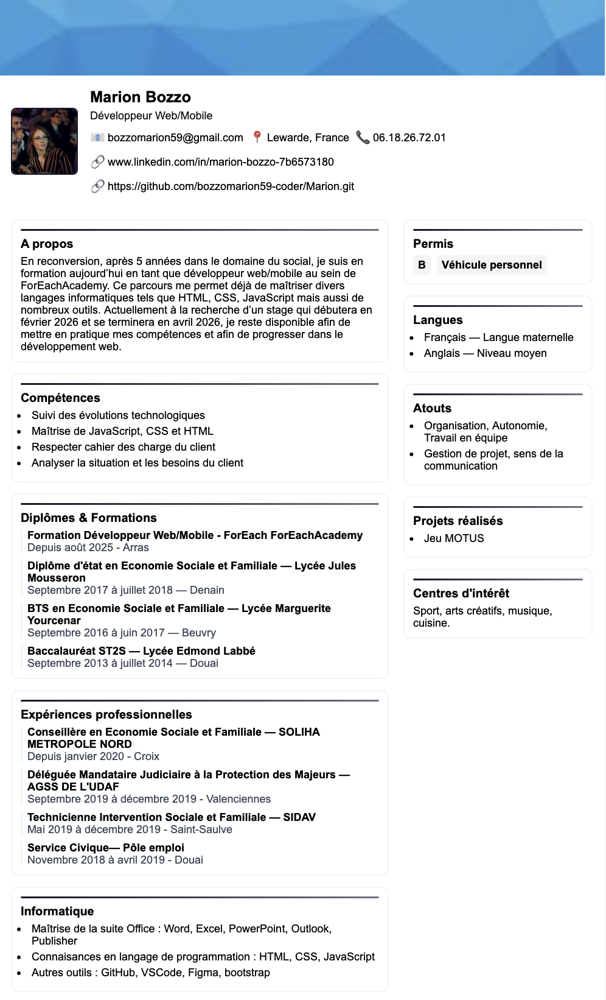

Présentation du projet
Ce projet consiste à créer un CV en ligne en HTML/CSS, avec une mise en page moderne, responsive et adaptée à tous les écrans. L’objectif était de proposer une version numérique élégante et professionnelle d’un CV traditionnel.
Techniques utilisées
- HTML
- CSS
- Responsive Design
Aperçu du CV
Pour en savoir davantage sur la conception et le développement de ce projet, vous pouvez consulter le dépôt GitHub :
Voir sur GitHub